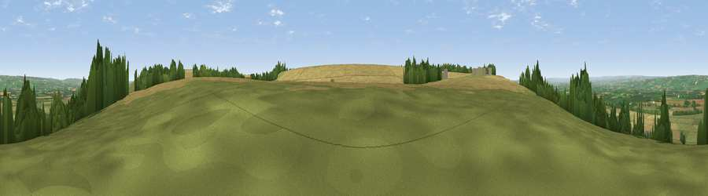

Viewpoint near West Heslerton
#20629 in England · top 41% of its area beats it · near West HeslertonWhere it is
The exact computed spot (SE 90525 74825). Click the marker for map links.
The view, rendered

A 360° render of this exact spot computed from the terrain model, tree cover and land cover — summer colours, afternoon light, calibrated against photographs of famous viewpoints. Real trees, hedges and buildings will differ in detail.
The panorama
Grey silhouette: terrain skyline in each direction (720 bearings, Earth curvature and refraction included). Dashed green: skyline with trees (+15 m) and buildings (+8 m) as obstacles. Blue strip: how far the ground is visible on each bearing.
Where the view opens
Wedge length = distance to the farthest visible ground on that bearing (vegetation-aware). Rings at 10, 25 and 50 km.
What fills the view
45% cropland · 42% grassland · 12% woodland · 1% built-up
Angular shares of the visible panorama (visual magnitude), not map area. Landscape diversity 0.45 (0–1 Shannon).
Key numbers
More beautiful places nearby
The staircase of upgrades: each row has a higher view potential than everything closer. Driving times are estimates from straight-line distance, calibrated against real road routing — check an actual route before setting out.
| Place | Direction | Drive | Score |
|---|---|---|---|
| East Heslerton Brow | E · 2 km | ~5 min | 61.4 |
| Viewpoint near West Heslerton | ENE · 2 km | ~5 min | 70.5 |
| Viewpoint near Settrington | WSW · 6 km | ~14 min | 72.3 |
| Seamer Beacon | NE · 16 km | ~29 min | 76.9 |
| Olivers Mount | NE · 18 km | ~31 min | 80.3 |
| Viewpoint near Ravenscar | NNE · 27 km | ~44 min | 87.3 |
| Viewpoint near Ravenscar | NNE · 28 km | ~44 min | 90.0 |
| Viewpoint near Easington | NNW · 48 km | ~69 min | 90.2 |
54.16126, -0.61512 · source: screening · position refined by local search. Computed location — check access rights before visiting.